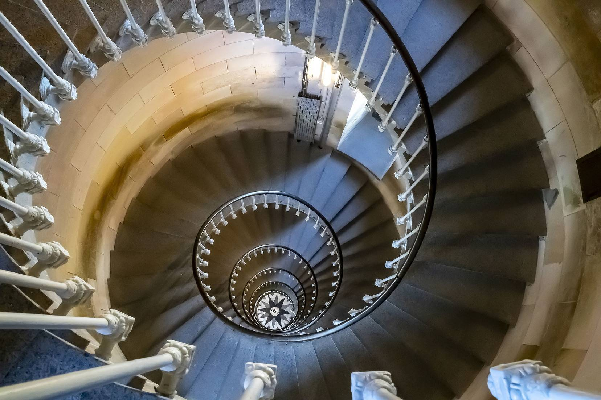

Photo : Guy EichelbergerMentions légales
Éditeur, hébergement, données personnelles et droits d'auteur sur les images.
Éditeur du site
Photo Ciné Club Sénonais
Espace Saint Savinien, Entrée 3 place Étienne Dolet, 89100 Sens
E-mail : contact@photoclubsenonais.fr · Tél. 06 30 68 94 77
Hébergement
Netlify, Inc. — 512 2nd Street, Suite 200, San Francisco, CA 94107, États-Unis — netlify.com.
Droits d'auteur sur les images
Toutes les photographies présentées sur ce site sont la propriété exclusive de leurs auteurs et sont créditées à proximité de chaque image. Toute reproduction, représentation, modification ou diffusion, même partielle, sans l'autorisation écrite de l'auteur, est interdite.
Les images proviennent des pages publiques du club (blog et galeries en ligne). L'accord de chaque auteur est à confirmer avant toute mise en ligne définitive ; tout auteur peut demander le retrait ou la modification de ses images en écrivant à contact@photoclubsenonais.fr.
Auteurs crédités sur ce site : Alain Couettant, Bruno Kapis, Daniel Guillier, Dominique Guillot, Dominique Pommier, Francine Nabonne, Guy Eichelberger, Hervé Campenom, Jean-Luc Boulard, Jean-Michel Garnier, Jean-Paul Monier, Jo Auclair, Marc Queyreix, Olivier De Rosa, Patrick Delostal, Philippe Sabater, Sonia Couettant, Sophie Martins, Thierry Chazaud. Affiche de l'exposition d'automne 2026 : photo d'Éric Reneau.
Données personnelles
Le formulaire de contact recueille votre nom, votre e-mail, éventuellement votre téléphone et votre message, uniquement pour répondre à votre demande. Les messages sont reçus via le service Netlify Forms et ne sont pas utilisés à d'autres fins ni transmis à des tiers. Conformément au RGPD, vous pouvez demander l'accès, la rectification ou la suppression de vos données en écrivant à contact@photoclubsenonais.fr.
Cookies et traceurs
Ce site n'utilise ni cookie publicitaire ni outil de mesure d'audience. Les vidéos YouTube ou Vimeo, lorsqu'elles sont ajoutées, ne se chargent qu'après votre clic.
Conception
Maquette réalisée par AssoVisible pour le Photo Ciné Club Sénonais. Typographies : Cormorant Garamond et Jost (licence SIL Open Font).